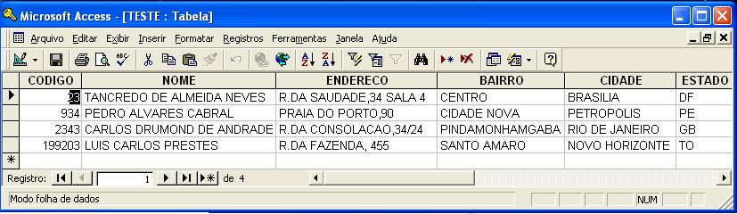

Gera arquivo em formatos diversos.
Save File arquivo
[ CLOSE |
CLOSE-ALL
]
[ campo
]
DELIMITER delimitador
|
[ UTF-8 RECORD
registro
]
Nome do arquivo a ser gravado. A extensão determina o formato a ser utilizado, se for omitida ou não suportada pelo comando, o arquivo será gravado no formato texto. Podem ser gravados múltiplos arquivos simultaneamente, o controle se baseia neste argumento.
|
Formatos suportados |
|
|
DBF |
Dbase III |
|
XML |
Extensible Markup Language |
|
JSON |
JavaScript Object Notation |
|
RPX |
Formato RPV delimitado por "|" (X"7C") |
|
TXT |
Formato texto com especificação de delimitador opcional, se obtido será gerado um layout COBOL (.CPY) |
CLOSE
Encerra
a gravação do arquivo.
CLOSE-ALL
Encerra
a gravação do todos os arquivos em uso pelo
comando.
campo
Lista de campos para compor o
registro. Podem ser especificados até 1024
campos.
delimitador
Caractere a ser utilizado
como como delimitador de campos, neste caso não será
gerado o .CPY.
UTF-8 RECORD
Grava
arquivo texto utilizando a codificação UTF-8.
Linha texto a ser gravada na codificação UTF-8.
|
Codificação COBOL |
|
PERFORM UNTIL FS-CADASTRO
> "09" |
|
Efeito |
|
 |